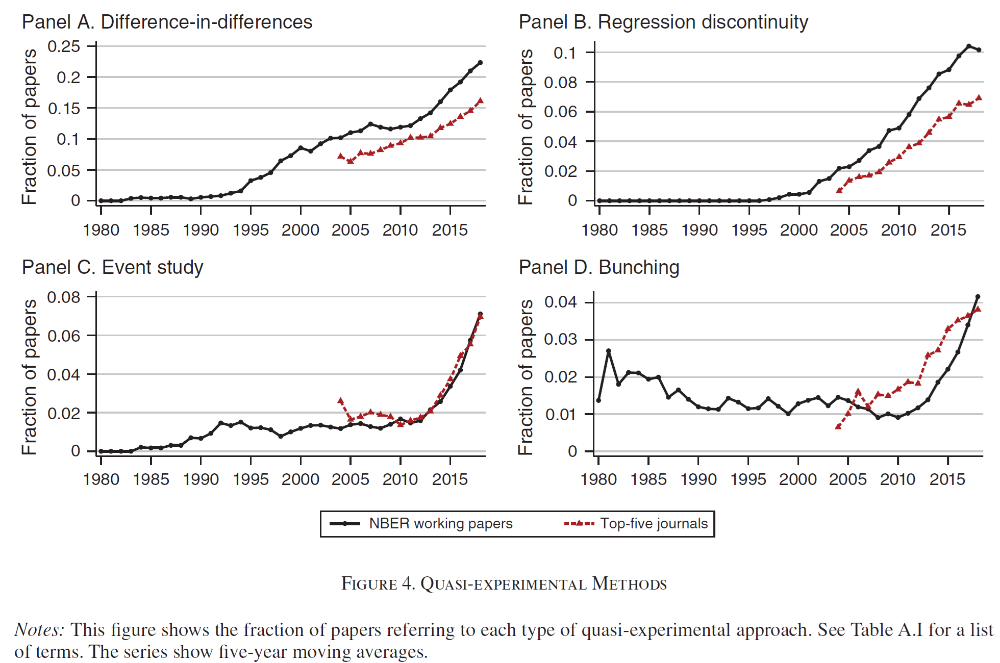
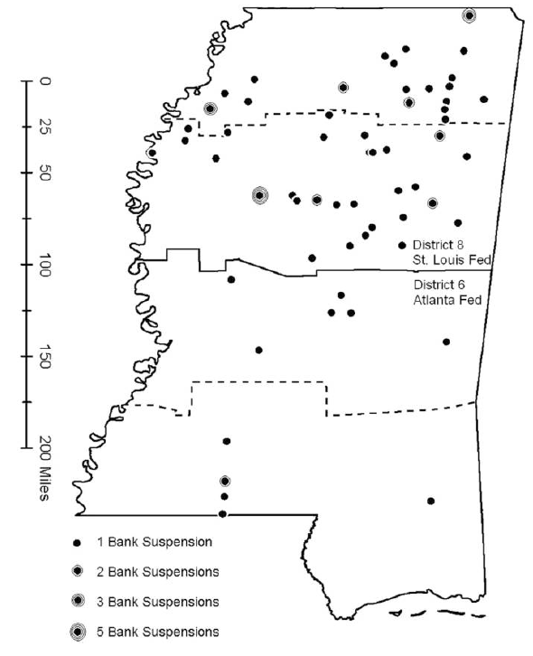
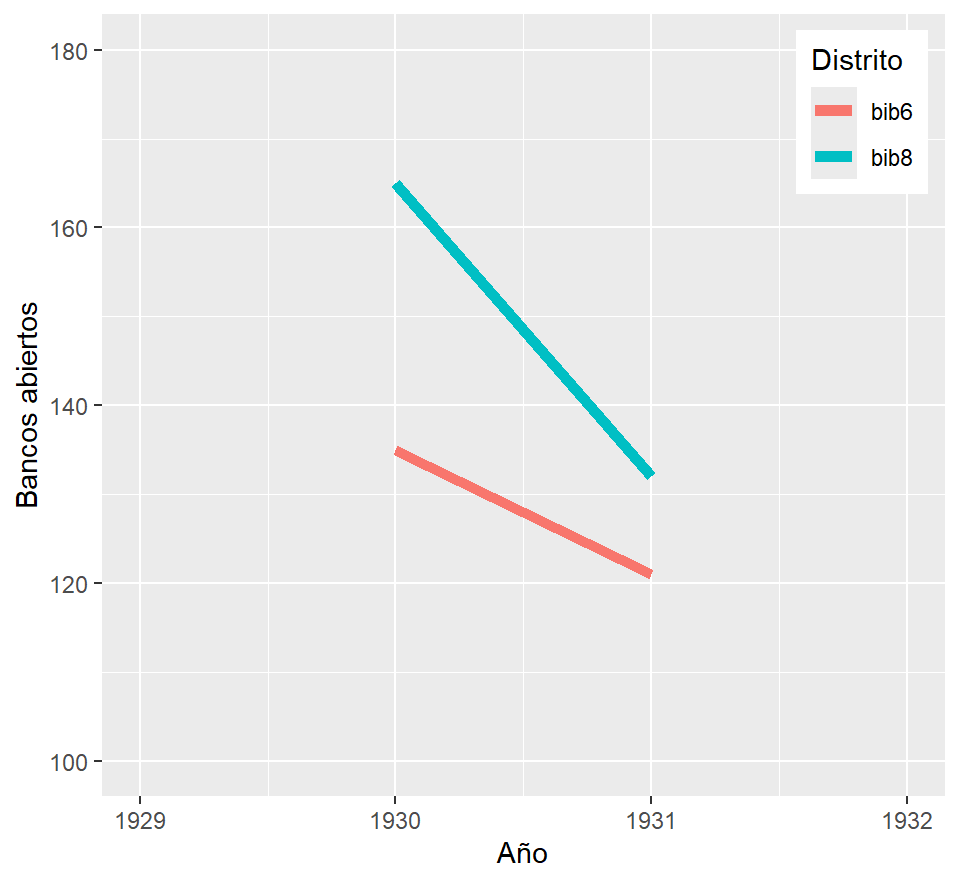
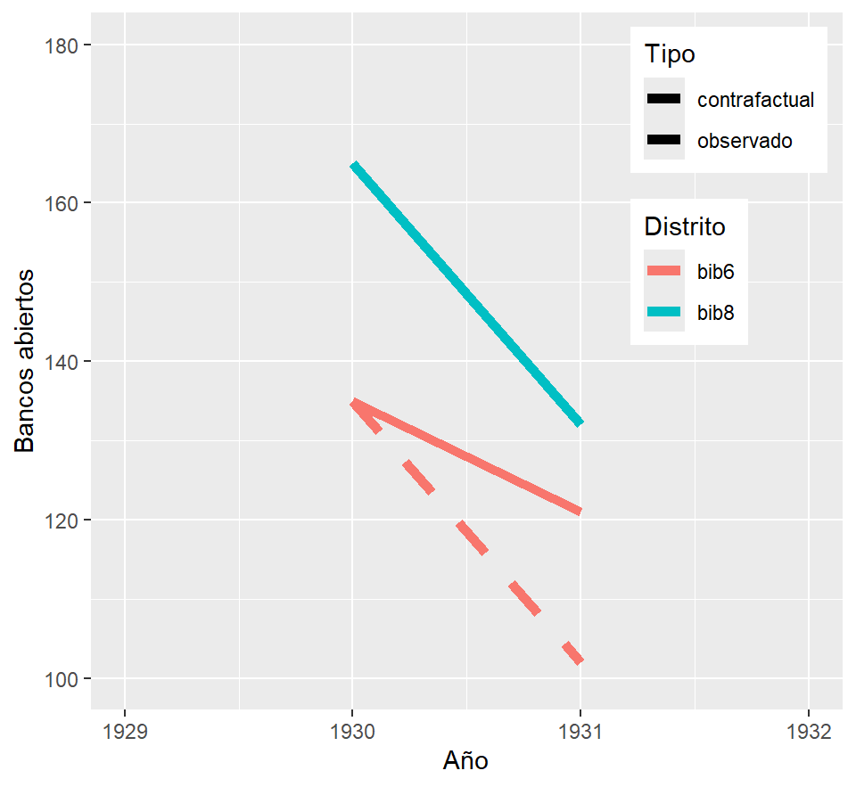
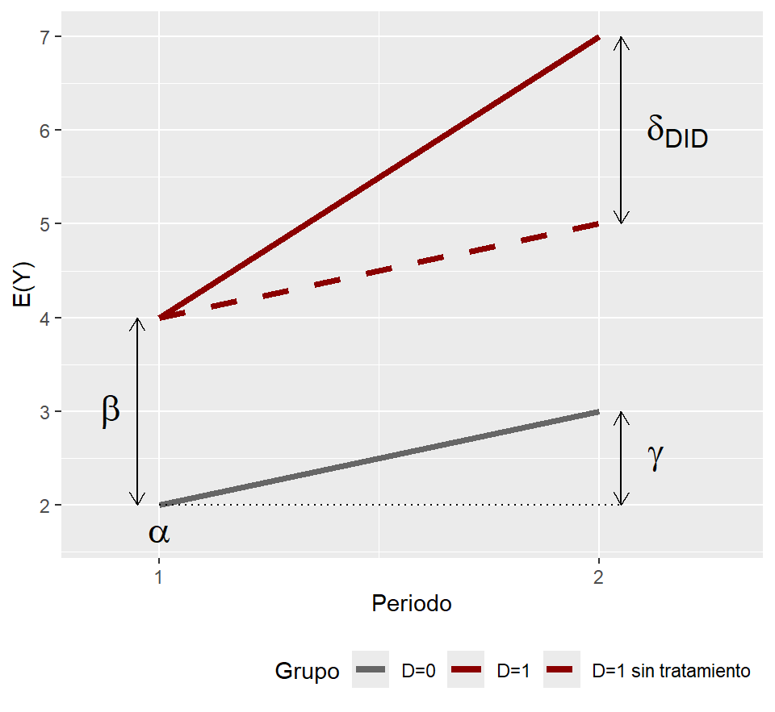
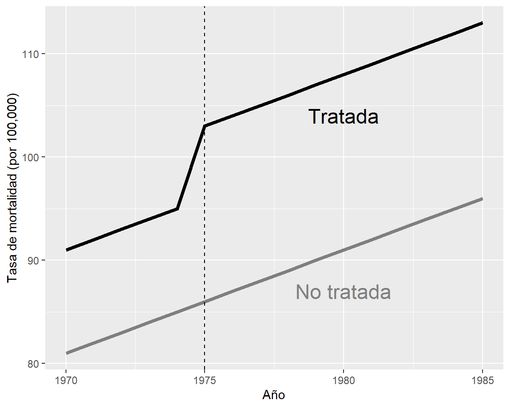
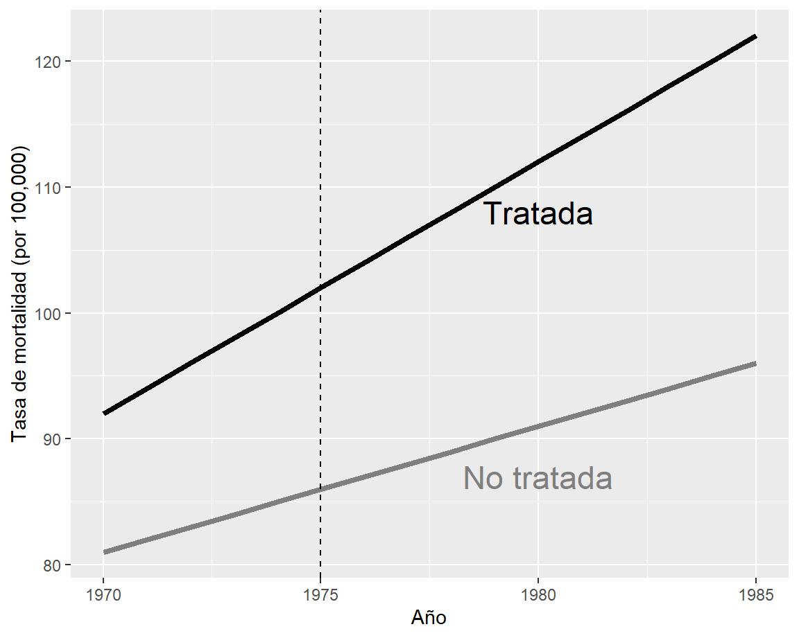
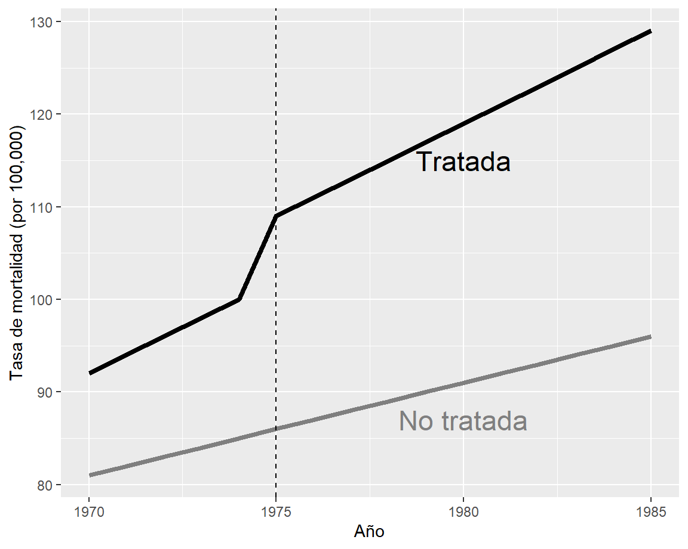
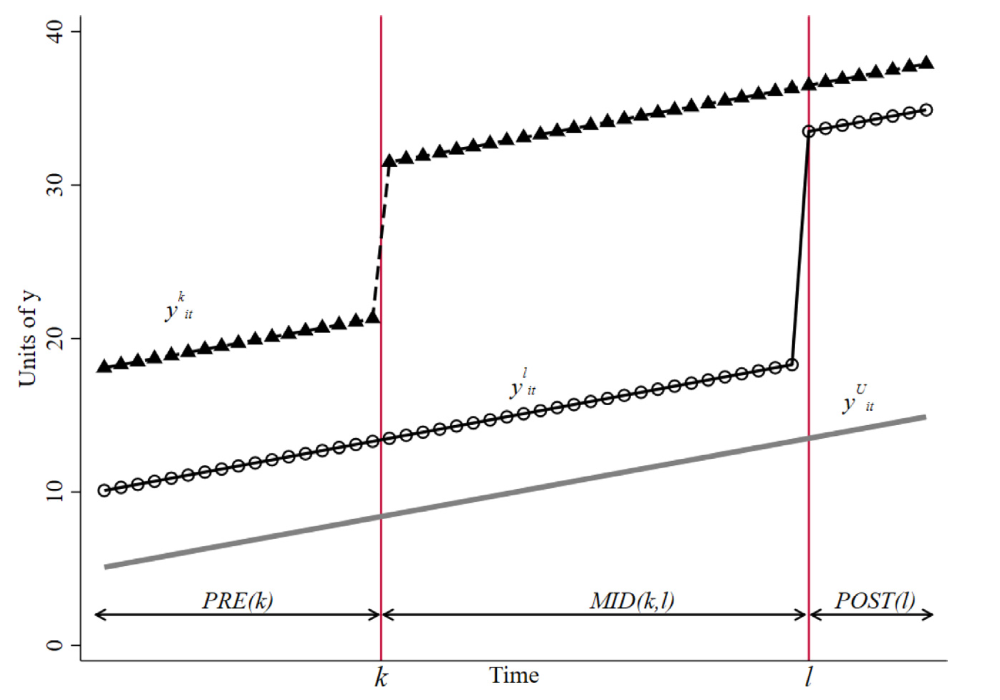
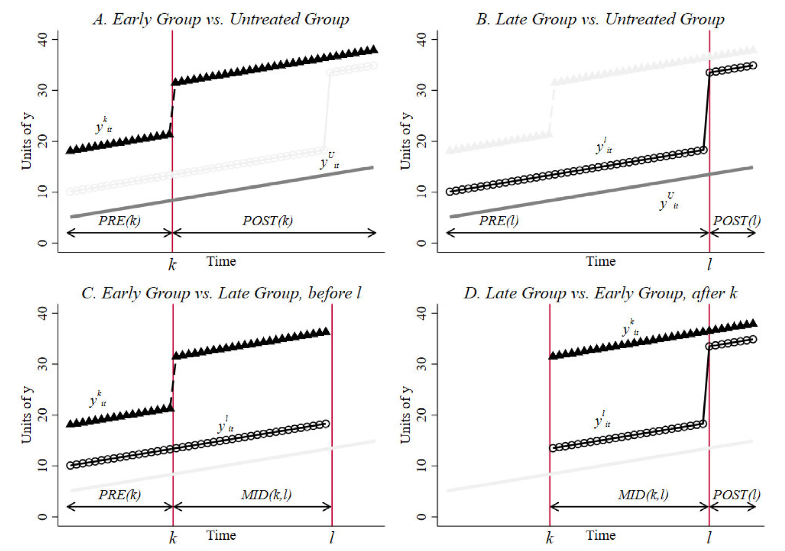

Diferencia en diferencias
Inferencia Causal
Centro de Investigación y Docencia Económicas
Maestría en Economía
Diferencia en diferencias
Motivación
Diferencia en diferencias especifica las condiciones bajo las cuales es posible identificar el efecto del tratamiento al comparar unidades tratadas y no tratadas, cuando se dispone de información antes y después de la intervención
Esta estrategia es ampliamente utilizada para analizar el efecto de leyes y políticas que afectan a un grupo de individuos al mismo tiempo
Además, constituye el fundamento para otro de los métodos en donde la investigación actual es muy activa, el control sintético
El supuesto fundamental es el de tendencias paralelas, que significa que podemos aprender sobre la trayectoria que hubieran seguido las unidades tratadas a partir de la trayectoria que siguieron las unidades no tratadas
DID se popularizó en la década de los 2000 y ha tenido un fuerte segundo aire en los 2020 para el análisis de tratamientos con adopción escalonada
Métodos cuasiexperimentales en economía

Ejemplo: corridas bancarias
Angrist & Pischke (2014) describen lo sucedido con el sector bancario en Mississippi durante la Gran Depresión
En EUA, la FED tiene 12 bancos regionales y cada uno tiene autonomía para tomar ciertas decisiones de política monetaria
En particular, Mississippi tiene una parte del estado bajo el mando del distrito 6 (Atlanta) y la otra parte en el distrito 8 (San Luis)

Ejemplo: corridas bancarias
- Como respuesta a las corridas bancarias que caracterizaron la crisis de 1929, los bancos comerciales en Mississippi se vieron expuestos a dos políticas distintas
\[ D= \begin{cases} 1\quad\quad \text{proveer liquidez adicional (distrito 6)} \\ 0\quad\quad \text{dar igual o menos liquidez (distrito 8)} \\ \end{cases} \]
Si estamos interesados en la cantidad de bancos que sobrevivieron y decir algo sobre qué política es más efectiva, ¿qué podemos hacer?
Una primera respuesta sería contar la diferencia después de la crisis:
| Distrito 8 | Distrito 6 | Diferencia |
|---|---|---|
| \(D=0\) | \(D=1\) | |
| 132 bancos | 121 bancos | -11 bancos |
Pareciera que la política de proveer liquidez, easy money, causó que quebraran más bancos
Sin embargo, esta comparación claramente ignora las condiciones iniciales
Representación gráfica
- Gráficamente observamos
banks <- read_csv("banks_mm.csv",
locale = locale(encoding = "latin1"))
banks <- banks |>
filter(month(date) == 7L, mday(date) == 1L) |>
mutate(year = year(date)) |>
select(year, bib6, bib8) |>
pivot_longer(c(bib6, bib8), names_to = "distrito",
values_to = "banks") |>
arrange(distrito, year) |>
mutate(treatment = ifelse(distrito == "bib6", 1, 0),
post = ifelse(year >= 1931, 1, 0))
banks |>
mutate(banks = ifelse(year == 1930 | year == 1931,
banks, NA)) |>
filter(year <= 1932) |>
ggplot(aes(year, banks, color = distrito)) +
geom_line(linewidth = 2) +
scale_y_continuous(limits = c(100, 180)) +
labs(x = "Año", y = "Bancos abiertos",
color = "Distrito")
Representación gráfica
- Del distrito 8 (no tratado) podemos obtener la pendiente:
\[m_{8}=\frac{Y_{8,post}-Y_{8,pre}}{X_{8,post}-X_{8,pre}}=\frac{132-165}{1931-1930}=-33\]
donde \(X_{d,pre}\) y \(X_{d,post}\) son los años
- Y entonces, podemos encontrar cuál hubiera sido el número de bancos en el distrito 6 (tratado) si hubiera seguido la pendiente del distrito 8:
\[m_{6}=\frac{\tilde{Y}_{6,post}-Y_{6,pre}}{X_{6,post}-X_{6,pre}}=\frac{\tilde{Y}_{6,post}-135}{1931-1930}=-33\]
- Por tanto, \(\tilde{Y}_{6,post}=102\) es el número de bancos que el distrito 6 hubiera tenido si hubiera seguido una tendencia paralela a la del distrito 8
Representación gráfica
- Podemos construir el contrafactual para el distrito 6 observando la pendiente del distrito 8
banks_cf <- banks |>
mutate(banks = ifelse(year == 1930 | year == 1931,
banks, NA)) |>
filter(year <= 1932) |>
mutate(tipo = "observado")
d6_cf <- banks_cf |>
filter(distrito == "bib6") |>
mutate(banks = ifelse(year == 1931, 102, banks),
tipo = "contrafactual")
banks_cf <- rbind(banks_cf, d6_cf)
banks_cf |>
ggplot(aes(year, banks,
color = distrito, linetype = tipo)) +
geom_line(linewidth = 2) +
scale_linetype_manual(values = c("dashed", "solid")) +
scale_y_continuous(limits = c(100, 180)) +
labs(x = "Año", y = "Bancos abiertos",
color = "Distrito", linetype = "Tipo")
Un estimador de DID
- Podemos dar así una primera definición de lo que es la diferencia en diferencias del número de bancos que sobrevivieron a la Gran Depresión en Mississippi
\[ \begin{aligned} \hat{\delta}_{DID}&=(Y_{6,post}-Y_{6,pre})-(Y_{8,post}-Y_{8,pre}) \\ &=(Y_{6,1931}-Y_{6,1930})-(Y_{8,1931}-Y_{8,1930}) \\ &=(121-135)-(132-165) \\ &=-14+33 = 19 \end{aligned} \]
El estimador de DID toma en cuenta las diferencias iniciales. El distrito 8 ya tenía más bancos abiertos que el 6 antes de la crisis
DID construye un contrafactual para las unidades tratadas usando la pendiente de las no tratadas
DID en el diseño \(2\times 2\)
Definiciones
\(t\in\{1,2\}\) periodos
$D_i=
\[\begin{cases} 1\quad\quad \text{si $i$ es tratado} \\ 0\quad\quad \text{si $i$ no es tratado} \\ \end{cases}\]$
El tratamiento ocurre entre los periodos 1 y 2
\(Y_{it}\) es la variable de resultados observada
Datos en panel con \(i=1,\ldots,N\) unidades (puede adaptarse a secciones cruzadas repetidas)
\(Y_{it}(0)\) y \(Y_{it}(1)\) son los resultados potenciales bajo cada valor del tratamiento
Estimamos el ATT (average treatment effect on the treated): \[ATT=E(Y_2(1)-Y_2(0)|D=1)\]
\(Y_2(0)\) no es observado para el grupo con \(D=1\)
Callaway & Sant’Anna (2021) y Roth, Sant’Anna, Bilinski & Poe (2023) usan ATT mientras que CA usa ATET
Supuestos
Supuesto 1: tendencias paralelas
- El cambio promedio en la variable de resultados entre los grupos tratados y no tratados habría sido el mismo en ausencia del tratamiento
\[E(Y_2(0) - Y_1(0) | D = 1) = E(Y_2(0) - Y_1(0) | D = 0)\] Supuesto 2: no anticipación
- Las unidades que aún no son tratadas no anticipan que lo van a ser, por lo que el tratamiento no afecta el resultado potencial pre intervención
\[Y_{i1}(0) = Y_{i1}(1) \quad \forall \quad \text{$i$ con $D_i = 1$}\]
Supuesto 3: SUTVA
DID resuelve el problema contrafactual
- Reacomodando los términos del supuesto de tendencias paralelas para expresar \(E(Y_2(0)| D = 1)\) (lo que no vemos):
\[E(Y_2(0)|D=1)=E(Y_1(0)|D=1)+E(Y_2(0)-Y_1(0)|D=0)\]
- Por no anticipación, \(E(Y_1(0)|D=1)=E(Y_1(1)|D=1)\), entonces:
\[ \begin{aligned} E(Y_2(0)|D=1)&=E(Y_1(1)|D=1)+E(Y_2(0)-Y_1(0)|D=0) \\ &=E(Y_1|D=1)+E(Y_2-Y_1|D=0) \end{aligned} \]
- Sustituyendo en la definición del ATT:
\[ATT=\underbrace{E(Y_2-Y_1|D=1)}_{\text{cambio para } D=1}-\underbrace{E(Y_2-Y_1|D=0)}_{\text{cambio para } D=0}\]
DID resuelve el problema contrafactual
- La expresión para el \(ATT\) puede ser reescrita como:
\[ATT=\underbrace{(E(Y_2|D=1)-E(Y_2|D=0))}_{\text{diferencia entre grupos en $t=2$}}-\underbrace{(E(Y_1|D=1)-E(Y_1|D=0))}_{\text{diferencia entre grupos en $t=1$}}\]
Estimador de DID con diferencias de medias
Las ecuaciones anteriores expresan el \(ATT\) como una diferencia en diferencias de esperanzas poblacionales
Una forma natural de estimarlo es reemplazar las esperanzas por sus análogos muestrales. Siguiendo la primera expresión para el \(ATT\), podemos estimar:
\[\widehat{ATT}=(\bar{Y}_{t=2,D=1}-\bar{Y}_{t=1,D=1})-(\bar{Y}_{t=2,D=0}-\bar{Y}_{t=1,D=0})\]
donde \(\bar{Y}_{t=t',D=d}\) es la media muestral de \(Y\) para el grupo \(d\) en el periodo \(t'\)
Estimador de DID con regresión
La forma más común de implementar la estimación por DID es usando una regresión
Definimos \(POST_t=\mathbf{1}(t=2)\)
\[Y_{it}=\alpha+\beta D_i+\gamma POST_t+\delta_{DID}(D_i\times POST_t)+\varepsilon_{it}\]
- Las medias condicionales de cada grupo y periodo son:
| \(t=1\) | \(t=2\) | Diferencia | |
|---|---|---|---|
| \(D=0\) | \(\alpha\) | \(\alpha+\gamma\) | \(\gamma\) |
| \(D=1\) | \(\alpha+\beta\) | \(\alpha+\beta+\gamma+\delta_{DID}\) | \(\gamma+\delta_{DID}\) |
| Diferencia | \(\beta\) | \(\beta+\delta_{DID}\) | \(\delta_{DID}\) |
Estimador de DID con regresión
Lo que la regresión identifica
- \(\alpha=E(Y_1|D=0)\)
- \(\beta=E(Y_1|D=1)-E(Y_1|D=0)\)
- \(\gamma=E(Y_2|D=0)-E(Y_1|D=0)\)
- \(\delta_{DID}=(E(Y_2|D=1)-E(Y_1|D=1))-(E(Y_2|D=0)-E(Y_1|D=0))\)
Si se cumplen los supuestos 1, 2 y 3, \(\delta_{DID}=ATT\)
La ventaja de usar regresión es que obtenemos errores estándar y podemos añadir covariables (con cuidado)
DID con regresión gráficamente
medias <- tibble(
t = rep(1:2, 3), Y = c(2, 3, 4, 7, 4, 5),
Grupo = rep(c("D=0", "D=1", "D=1 sin tratamiento"),
each = 2))
medias |>
ggplot(aes(t, Y, color = Grupo, linetype = Grupo)) +
geom_line(linewidth = 1.5) +
annotate("segment", x = 1, xend = 2.05,
y = 2, yend = 2, linetype = "dotted") +
annotate("segment", x = c(0.95, 2.05, 2.05),
xend = c(0.95, 2.05, 2.05),
y = c(2, 2, 5), yend = c(4, 3, 7),
arrow = arrow(ends = "both",
length = unit(0.1, "in"))) +
annotate("text", x = c(1, 0.89, 2.13, 2.18),
y = c(1.7, 3, 2.5, 6), parse = TRUE, size = 6,
label = c("alpha", "beta", "gamma",
"delta[DID]")) +
scale_color_manual(values = c("grey40", "darkred",
"darkred")) +
scale_linetype_manual(values = c(1, 1, 2)) +
scale_x_continuous(breaks = 1:2,
limits = c(0.85, 2.3)) +
labs(x = "Periodo", y = "E(Y)") +
theme(legend.position = "bottom")
Múltiples unidades y periodos pre y post tratamiento
Como en el ejemplo de las corridas bancarias, donde tenemos datos sobre el número de bancos en cada distrito en cada año (1929-1934), podemos tener varias observaciones pre y post intervención
También podemos tener múltiples unidades en los grupos tratado y no tratado
Podemos generalizar la regresión sustituyendo las dummies por efectos fijos:
\[Y_{it}=\alpha_i+\lambda_t+\delta_{DID}(D_i\times POST_t)+\varepsilon_{it}\]
\(\alpha_i\): efectos fijos individuales (sustituyen a \(\alpha+\beta D_i\)), diferencias entre unidades que no cambian en el tiempo
\(\lambda_t\): efectos fijos de periodo (sustituyen a \(\gamma POST_t\)), choques comunes a todas las unidades
\(D_i\times POST_t\): término de interacción, con \(POST_t=\mathbf{1}(t\geq t_0)\) y \(t_0\) el primer periodo tratado
\(\delta_{DID}\) es el efecto de tratamiento
Si hay varios puntos pre intervención, el supuesto de tendencias paralelas para ese subperiodo puede probarse empíricamente
Ejemplo: corridas bancarias con regresión
Usemos los datos del archivo banks_mm.csv que se utilizan en MM
Es una forma muy básica de datos en panel: cada fila representa un distrito en un periodo de tiempo
Podemos identificar si cada fila pertenece a un distrito tratado o no o a un periodo posterior al tratamiento o no
| year | distrito | banks | treatment | post |
|---|---|---|---|---|
| 1929 | bib6 | 141 | 1 | 0 |
| 1930 | bib6 | 135 | 1 | 0 |
| 1931 | bib6 | 121 | 1 | 1 |
| 1932 | bib6 | 113 | 1 | 1 |
| 1933 | bib6 | 102 | 1 | 1 |
| 1934 | bib6 | 102 | 1 | 1 |
| 1929 | bib8 | 169 | 0 | 0 |
| 1930 | bib8 | 165 | 0 | 0 |
| 1931 | bib8 | 132 | 0 | 1 |
| 1932 | bib8 | 120 | 0 | 1 |
| 1933 | bib8 | 111 | 0 | 1 |
| 1934 | bib8 | 109 | 0 | 1 |
Ejemplo: corridas bancarias con regresión
- Estimamos \(Y_{it}=\alpha+\beta D_i+\gamma POST_t+\delta_{DID}(D_i\times POST_t)+\varepsilon_{it}\), con \(POST_t=\mathbf{1}(t\geq 1931)\)
| Bancos abiertos | |
|---|---|
| * p < 0.1, ** p < 0.05, *** p < 0.01 | |
| treatment | -29.000** |
| (8.754) | |
| post | -49.000*** |
| (7.581) | |
| treatment:post | 20.500* |
| (10.721) | |
| (Intercept) | 167.000*** |
| (6.190) | |
| Num.Obs. | 12 |
Ejemplo: corridas bancarias con regresión
- Noten que si solo usamos dos años, obtenemos exactamente lo que obtendríamos haciendo las diferencias a mano
\[\hat{\delta}_{DID}=(Y_{6,1931}-Y_{6,1930})-(Y_{8,1931}-Y_{8,1930})=19\]
did_bank2 <- lm(banks ~ treatment*post,
data = filter(banks,
year == 1930 | year == 1931))
# Cuatro observaciones y cuatro coeficientes:
# no hay errores estándar
modelsummary(list("Bancos abiertos" = did_bank2),
coef_map = c("treatment",
"post",
"treatment:post",
"(Intercept)"),
statistic = NULL,
gof_map = c("nobs"))| Bancos abiertos | |
|---|---|
| treatment | -30.000 |
| post | -33.000 |
| treatment:post | 19.000 |
| (Intercept) | 165.000 |
| Num.Obs. | 4 |
Relajación de los supuestos
En estos ejemplos hipotéticos asumimos un tratamiento que ocurre en 1974
Este gráfico muestra un caso de tendencias paralelas
El estimador de DID captura correctamente el salto por encima de la tendencia en la unidad tratada

Relajación de los supuestos
En este segundo ejemplo, el supuesto de tendencias paralelas pre intervención se viola
La línea de la unidad tratada es más inclinada en todos los periodos y estimar esta relación por DID de nuevo atribuiría a la política la diferencia de tendencias que ya existía antes de la intervención

Relajación de los supuestos
En este tercer ejemplo hay tendencias que no son paralelas pre tratamiento
La pendiente para la unidad tratada es mayor que la de la no tratada en todos los periodos
Aquí DID detectaría un efecto, pero sobreestimado, pues al salto en la unidad tratada le sumaría la brecha que de todos modos se iba abriendo por tener una tendencia más inclinada que la de la no tratada
Una forma de separar ambas cosas es incluir tendencias específicas por unidad:
\[Y_{it}=\alpha+\beta D_i+\gamma POST_t + \rho (D_i\times t) + \delta_{DID}(D_i\times POST_t)+\varepsilon_{it}\]

Inferencia
Estamos nuevamente ante un diseño con posible presencia de errores agrupados
La dimensión relevante ahora es \(i\) pues es muy probable que haya características no observadas de las unidades que presentan correlación serial
Con suficientes unidades, podemos usar los resultados de la matriz de varianza agrupada, donde el nivel de agrupación es ahora \(i\)
En general, cuando trabajamos con datos en panel, lo relevante es que \(N\) sea lo suficientemente grande para usar teoría asintótica (y no solo \(NT\))
Bertrand, Duflo & Mullainathan (2004) analizan 92 artículos de DID y encuentran que la mayoría no reconoce el problema de correlación serial, por lo que subestiman los errores estándar estimados
En la actualidad, en el trabajo empírico se pone énfasis en la correcta estimación de la matriz de varianzas usando resultados asintóticos o bootstrap por bloques en el caso de tener pocos grupos o clusters
Adopción escalonada
Adopción escalonada en la antigüedad
DID es uno de esos campos tan activos en la investigación que cosas que pensábamos superadas o completamente estudiadas se han modificado en los últimos años
En esta sección mostramos el tratamiento que MHE y MM dan a los problemas de adopción escalonada
La adopción escalonada ocurre cuando existen varios periodos de tratamiento y algunas unidades van siendo tratadas de forma desfasada
En México, las leyes de despenalización del aborto o las que reconocen las uniones entre personas del mismo sexo son buenos ejemplos de tratamientos con adopción escalonada
Hasta los trabajos de Goodman-Bacon (2021) y de de Chaisemartin & D’Haultfœuille (2020), los problemas con adopción escalonada se abordaban econométricamente de la misma forma que hemos descrito hasta ahora, conocida como efectos fijos bidireccionales (sí, suena horrible dicha traducción) o two-way fixed effects
Esta sección presenta el tipo de tratamiento que hoy ya consideramos inapropiado
Más adelante se presentan alternativas para los problemas de adopción escalonada
Edad legal para beber en EUA
Diferencias en la edad legal para beber en Estados Unidos
¿Las restricciones a la edad mínima para comprar alcohol tienen un impacto en la mortalidad?
Alabama redujo la edad legal a 19 en 1975, mientras que, por ejemplo, Arkansas mantuvo la edad en 21
Tenemos datos de mortalidad de 1970 a 1983 para personas de entre 18 y 20 años
Lo que hemos aprendido hasta ahora nos sugiere estimar el impacto por DID como sigue
\[Y_{st}=\alpha+\beta D_s+\gamma POST_t+\delta_{DID}(D_s\times POST_t)+\varepsilon_{st}\]
\(D_s\) es una dummy igual a 0 para Arkansas en todos los periodos e igual a 1 para Alabama en todos los periodos
\(POST_t\) es igual a cero para el periodo 1970-1975 e igual a 1 para el periodo 1976-1983
\(D_s\times POST_t\) es igual a 1 para las observaciones de Alabama en los años en los que la nueva política ya está en vigor
Más de un estado
¿Por qué quedarnos solo con la comparación con Arkansas?
Podemos incluir más unidades que implementen cambios en la política en distintos momentos
En vez de \(POST_t\) usamos efectos fijos por año
Y en vez de una dummy de tratamiento, incluimos efectos fijos por unidad
Además, el cambio en la ley podría no ser el mismo
Algunos estados mueven la edad a 18, otros a 19 y otros a 20
Podemos definir \(LEGAL_{st}\) como la proporción de individuos de entre 18 y 20 años autorizados para beber en el estado \(s\) y en el año \(t\)
\[Y_{st}=\alpha+\delta_{DID}LEGAL_{st}+\sum_k\beta_k STATE_{ks}+\sum_j \gamma_j YEAR_{jt}+\varepsilon_{st}\]
Estructura de datos en panel
Los datos que acabamos de describir tienen una estructura de panel
La variable de panel es el estado \(s\) y la variable de tiempo es el año \(t\)
En nuestros datos, cada estado se encuentra presente en varios años, y para cada estado y año sabemos la mortalidad y la fracción de personas de 18 a 20 años que pueden beber
Efectos fijos \(STATE_{ks}\): diferencias entre estados que no cambian con el tiempo
Efectos año \(YEAR_{jt}\): factores que afectan a todas las unidades por igual en un momento del tiempo
Interpretación
La interpretación de los resultados es directa
El acceso a alcohol causa un incremento de casi 11 muertes adicionales por cada 100,000 habitantes y este efecto es estadísticamente significativo
No hay efectos donde no esperaríamos tenerlos
| Muertes por 100,000 habs.: | \(\hat{\delta}_{DID}\) |
|---|---|
| Todas | 10.80 |
| (4.59) | |
| Accidentes en vehículos | 7.59 |
| (2.50) | |
| Suicidio | 0.59 |
| (0.59) | |
| Causas internas | 1.33 |
| (1.59) |
Descomposición de Goodman-Bacon
¿Qué hace el estimador de TWFE?
Consideremos el siguiente problema de adopción escalonada
- Observamos \(T\) periodos
- \(k\) denota a las unidades tratadas temprano
- \(l\) denota a las unidades tratadas tarde
- \(\bar{D}_k\) es la fracción de los periodos en que las unidades \(k\) están tratadas
- Similarmente, \(\bar{D}_l\)
- \(n_k\) es la proporción de la muestra que corresponde a las unidades tratadas temprano
- \(n_l\) es la proporción de la muestra que corresponde a las unidades tratadas tarde
- \(n_U\) es la proporción de la muestra que corresponde a las unidades nunca tratadas
- Para cualesquiera dos grupos \(a\) y \(b\), \(n_{ab}=\frac{n_a}{n_a+n_b}\) es la proporción de \(a\) en la submuestra formada por ambos
¿Qué hace el estimador de TWFE?

¿Qué hace el estimador de TWFE?
Cuatro posibles comparaciones \(2\times 2\)
- Las comparaciones con las unidades nunca tratadas:
\[\hat{\delta}_{jU}=\left(\bar{Y}_j^{POST(j)}-\bar{Y}_j^{PRE(j)}\right)-\left(\bar{Y}_U^{POST(j)}-\bar{Y}_U^{PRE(j)}\right),\;j\in\{k,l\}\]
- La comparación entre \(k\) y \(l\) cuando las unidades \(k\) son tratadas, usando los periodos antes de que las unidades \(l\) sean tratadas
\[\hat{\delta}^{k}_{kl}=\left(\bar{Y}_k^{MID(k,l)}-\bar{Y}_k^{PRE(k)}\right)-\left(\bar{Y}_l^{MID(k,l)}-\bar{Y}_l^{PRE(k)}\right)\]
- La comparación entre \(l\) y \(k\) cuando las unidades \(l\) son tratadas, usando los periodos después de que las unidades \(k\) fueron tratadas
\[\hat{\delta}^{l}_{kl}=\left(\bar{Y}_l^{POST(l)}-\bar{Y}_l^{MID(k,l)}\right)-\left(\bar{Y}_k^{POST(l)}-\bar{Y}_k^{MID(k,l)}\right)\]
¿Qué hace el estimador de TWFE?

¿Qué hace el estimador de TWFE?
Denotamos \(D_{it}=1\) cuando la unidad \(i\) es tratada en el periodo \(t\)
Por el teorema de Frisch-Waugh-Lovell sabemos que podemos purgar de efectos fijos a \(D_{it}\)
Es decir, podemos estimar por MCO, donde \(P_{\tau t}\) son dummies temporales y \(S_{ji}\) son dummies individuales:
\[D_{it}=\sum_{\tau}\gamma_\tau P_{\tau t}+\sum_{j}\pi_j S_{ji}+\varepsilon_{it}\]
Luego obtenemos \(\tilde{D}_{it}=D_{it}-\hat{D}_{it}\)
Y entonces el estimador de TWFE puede escribirse como el coeficiente de una regresión bivariada, donde \(\hat{C}(\cdot,\cdot)\) es la covarianza muestral y \(\hat{V}^D\) es la varianza de la variable de tratamiento purgada de efectos fijos:
\[\hat{\delta}_{DID}=\frac{\hat{C}(Y_{it}, \tilde{D}_{it})}{\hat{V}^D}\]
¿Qué hace el estimador de TWFE?
- Goodman-Bacon (2021) muestra que el estimador de TWFE puede descomponerse como:
\[\hat{\delta}_{DID}=s_{kU}\hat{\delta}_{kU}+s_{lU}\hat{\delta}_{lU}+s_{kl}^k\hat{\delta}_{kl}^k+s_{kl}^l\hat{\delta}_{kl}^l\]
con los pesos dados por:
\(s_{kU}=\frac{(n_k+n_U)^2\hat{V}_{kU}^D}{\hat{V}^D}\)
\(s_{lU}=\frac{(n_l+n_U)^2\hat{V}_{lU}^D}{\hat{V}^D}\)
\(s_{kl}^k=\frac{[(n_k+n_l)(1-\bar{D}_l)]^2\hat{V}_{kl}^{D,k}}{\hat{V}^D}\)
\(s_{kl}^l=\frac{[(n_k+n_l)\bar{D}_k]^2\hat{V}_{kl}^{D,l}}{\hat{V}^D}\)
¿Qué son los pesos?
Podemos desarrollar lo que son las varianzas del tratamiento:
\(s_{kU}=\frac{(n_k+n_U)^2\hat{V}_{kU}^D}{\hat{V}^D}=\frac{(n_k+n_U)^2n_{kU}(1-n_{kU})\bar{D}_k(1-\bar{D}_k)}{\hat{V}^D}\)
\(s_{lU}=\frac{(n_l+n_U)^2\hat{V}_{lU}^D}{\hat{V}^D}=\frac{(n_l+n_U)^2n_{lU}(1-n_{lU})\bar{D}_l(1-\bar{D}_l)}{\hat{V}^D}\)
\(s_{kl}^k=\frac{[(n_k+n_l)(1-\bar{D}_l)]^2\hat{V}_{kl}^{D,k}}{\hat{V}^D}=\frac{[(n_k+n_l)(1-\bar{D}_l)]^2n_{kl}(1-n_{kl}) \frac{\bar{D}_k-\bar{D}_l}{1-\bar{D}_l}\frac{1-\bar{D}_k}{1-\bar{D}_l}}{\hat{V}^D}\)
\(s_{kl}^l=\frac{[(n_k+n_l)\bar{D}_k]^2\hat{V}_{kl}^{D,l}}{\hat{V}^D}=\frac{[(n_k+n_l)\bar{D}_k]^2n_{kl}(1-n_{kl})\frac{\bar{D}_l}{\bar{D}_k}\frac{\bar{D}_k-\bar{D}_l}{\bar{D}_k}}{\hat{V}^D}\)
¿Qué son los pesos?
Pongamos atención a uno de los pesos, \(s_{kU}\), para ver la intuición
Vimos que:
\[s_{kU}=\frac{(n_k+n_U)^2\hat{V}_{kU}^D}{\hat{V}^D}=\frac{(n_k+n_U)^2n_{kU}(1-n_{kU})\bar{D}_k(1-\bar{D}_k)}{\hat{V}^D}\]
- Primero, noten que el peso depende de \((n_k+n_U)^2\), es decir, el cuadrado de la proporción de la muestra que se usa para estimar cada comparación \(2\times 2\)
¿Qué son los pesos?
- Ahora veamos la varianza que entra en este peso:
\[\hat{V}_{kU}^D=n_{kU}(1-n_{kU})\bar{D}_k(1-\bar{D}_k)\]
Una primera cosa que entra en juego es \(n_{kU}=\frac{n_k}{n_k+n_U}\), el peso relativo de las unidades tratadas temprano en la submuestra
Recordemos que \(\bar{D}_k\) indica la fracción del tiempo del panel que las unidades \(k\) permanecen tratadas
Dado que \(D_{it}\) es binaria, \(\bar{D}_k(1-\bar{D}_k)\) es la varianza de \(D_{it}\) para las unidades \(k\)
¿Qué es lo más grande que puede ser \(\bar{D}_k(1-\bar{D}_k)\)?
Claramente esto es a lo más 0.25, es decir, la contribución se maximiza cuando el tratamiento ocurre lo más cercano a la mitad del panel (\(\bar{D}_k=0.5\))
En resumen, los pesos están dados por
\[\scriptsize \text{peso} = \frac{(\text{participación de la submuestra})^2(\text{varianza del tratamiento purgada de efectos fijos en la submuestra})}{\text{varianza del tratamiento purgada de efectos fijos en la muestra completa}}\]
¿Qué nos dice la descomposición?
Todos los grupos funcionan como controles (algunas veces)
Los pesos en cada comparación \(2 \times 2\) dependen del tamaño de la muestra usada para estimarlos y del tiempo que las unidades permanecen tratadas
El efecto estimado se modificaría solo por agregar más años al final del panel
Los términos que dominen pueden incluso cambiar el signo del efecto estimado
Goodman-Bacon (2021) muestra que, en general, usar TWFE solo recupera un efecto de tratamiento bajo supuestos muy fuertes, el más crucial, bajo efectos de tratamiento que no varían en el tiempo (no hay efectos dinámicos)
Estimador de Callaway & Sant’Anna
Estimador de Callaway & Sant’Anna
El estimador de Callaway & Sant’Anna (2021) es una forma muy sencilla de explotar la información del desfase del tratamiento
Además permite una presentación muy intuitiva de los efectos de tratamiento
Esencialmente consiste en definir una serie de cohortes de unidades y estimar los impactos para cada cohorte
Luego podemos agregar los impactos por cohorte o presentar la dinámica de los impactos de forma gráfica
Definiciones
\(G_i=\min\{t:D_{it}=1\}\) es el primer periodo en que \(i\) es tratado
\(G_i=\infty\) indica que \(i\) nunca es tratado
\(\mathcal{G}\) es el conjunto de periodos en que alguna unidad empieza a ser tratada
\(t=1,\ldots,T\) son los periodos
\(D_{it}=1\;\forall\;t\geq G_i\) indica tratamiento absorbente
Definamos el efecto del tratamiento al periodo \(t\) para la cohorte que empezó a ser tratada en \(g\):
\[ATT(g,t)=E(Y_{t}(g)-Y_{t}(\infty)|G=g)\]
- Por ejemplo, \(ATT(2014,2016)\) es el efecto del tratamiento en 2016 para aquellos tratados empezando en 2014
Supuestos
Supuesto 1. Tendencias paralelas en el contexto escalonado
\[E(Y_{t}(\infty)-Y_{t'}(\infty)|G=g)=E(Y_{t}(\infty)-Y_{t'}(\infty)|G=g')\quad\forall\;t\neq t',\; g\neq g'\]
- Este supuesto indica que en el estado contrafactual de nunca haber sido tratados, dos grupos tratados en dos momentos diferentes \(g\) y \(g'\) habrían tenido una trayectoria igual entre los periodos \(t\) y \(t'\)
Supuesto 1a. Tendencias paralelas en el contexto escalonado (débil)
- Modifica el supuesto anterior pero \(\forall \;t,t'\geq g_{min}-1\) donde \(g_{min}=\min_i G_i\) es el primer periodo en donde alguna unidad es tratada (Callaway & Sant’Anna solo usan este supuesto más débil)
Supuestos
Supuesto 2. No anticipación en el contexto escalonado
\[Y_{it}(g)=Y_{it}(\infty)\quad \forall\;i \;\text{y}\;\forall\;t<g\]
Estimador de Callaway & Sant’Anna
- Callaway & Sant’Anna (2021) proponen identificar:
\[ATT(g,t)=E(Y_{t}-Y_{g-1}|G=g)-E(Y_{t}-Y_{g-1}|G\in\mathcal{G}_{comp}) \quad \forall\; t\geq g\]
Queremos comparar el valor de la variable de impacto entre el periodo \(g-1\) y el \(t\) para el grupo que fue tratado en \(g\) con algún grupo de comparación denominado \(\mathcal{G}_{comp}\) de tamaño \(N_{\mathcal{G}_{comp}}\)
Sustituyendo por el análogo muestral, donde \(N_g\) es el número de unidades en la cohorte \(g\):
\[\widehat{ATT}(g,t)=\frac{1}{N_g}\sum_{i:\;G_i=g}(Y_{it}-Y_{i,g-1})-\frac{1}{N_{\mathcal{G}_{comp}}}\sum_{i:\;G_i\in \mathcal{G}_{comp}}(Y_{it}-Y_{i,g-1})\]
¿Qué es \(\mathcal{G}_{comp}\)?
- \(\mathcal{G}_{comp}=\{\infty \}\): aquellas unidades nunca tratadas
- \(\mathcal{G}_{comp}=\{g':g'>t \}\): aquellas unidades aún no tratadas al periodo \(t\)
Reportar resultados
Si tenemos pocos periodos y cohortes puede ser práctico reportar todos los \(\widehat{ATT}(g,t)\)
También podemos construir medidas agregadas:
\[\theta = \sum_{g\in\mathcal{G}}\sum_{t=g}^{T}w(g,t)ATT(g,t)\]
Formas de agregación
- La notación usada en el artículo es densa pero en resumen, algunas agregaciones posibles son:
Efecto de tratamiento por duración de exposición
Podemos calcular \(\theta(e)\), el efecto promedio \(e\) periodos después del tratamiento, donde \(e=t-g\) es el tiempo que transcurre desde que se realizó el tratamiento
Podemos hacer un gráfico de \(\theta(e)\)
Efecto de tratamiento por grupo o cohorte
- Lo llamamos \(\theta(\tilde{g})\) y nos permite conocer si el efecto del tratamiento es distinto para cohortes que fueron tratadas temprano o tarde
Efecto de tratamiento acumulado
- Lo llamamos \(\theta(\tilde{t})\) y lo definimos como el efecto promedio por participar en el tratamiento hasta una fecha dada \(\tilde{t}\)
Ventajas del estimador
Toma en cuenta la heterogeneidad de los efectos de tratamiento
Los pesos son especificados por el investigador y no mecánicamente como en TWFE
Hace explícito el grupo de comparación (nunca tratados o aún no tratados)
Diferencia en diferencias
Inferencia Causal
CIDE · Maestría en Economía
© 2026 Irvin Rojas. Distribuido bajo licencia Creative Commons CC BY-NC-SA 4.0. Los materiales de terceros citados conservan sus propios derechos.

Inferencia Causal · Diferencia en diferencias